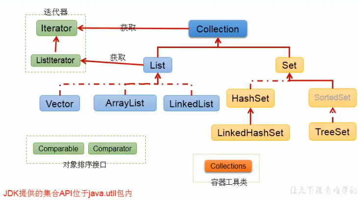
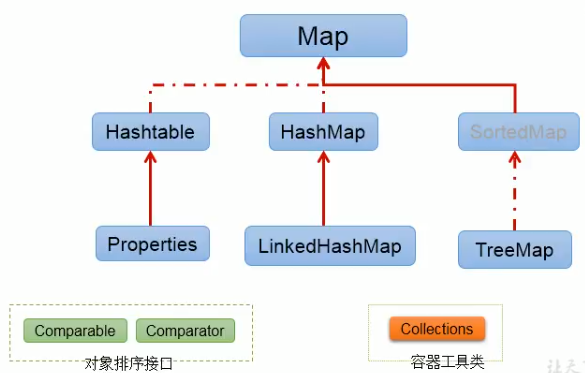
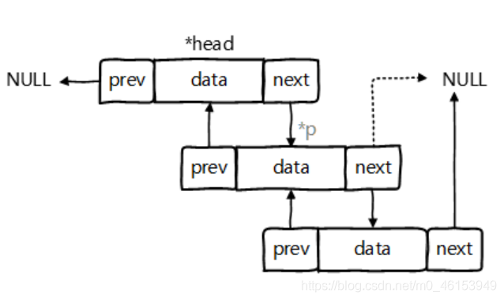
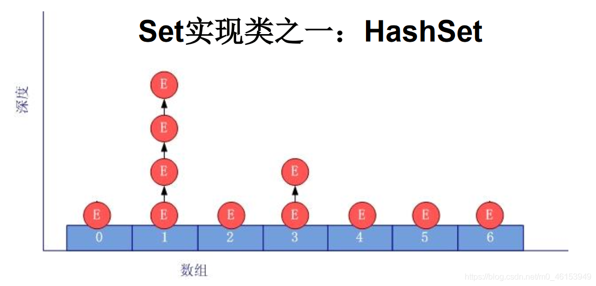
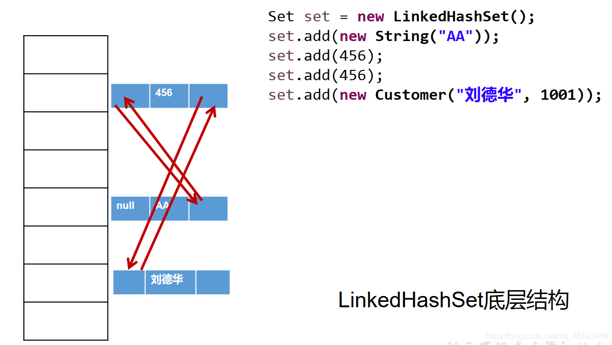
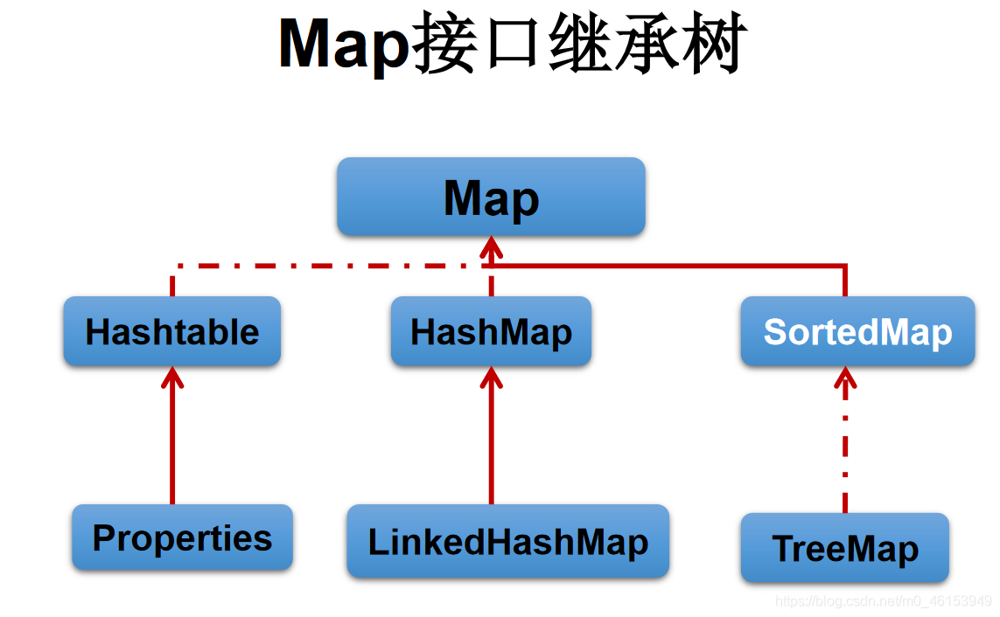
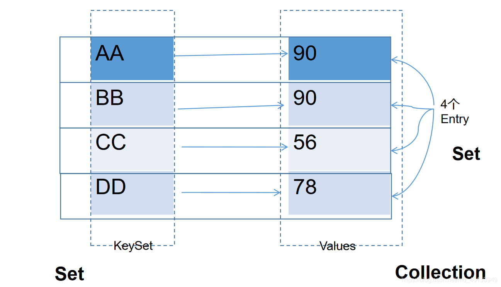
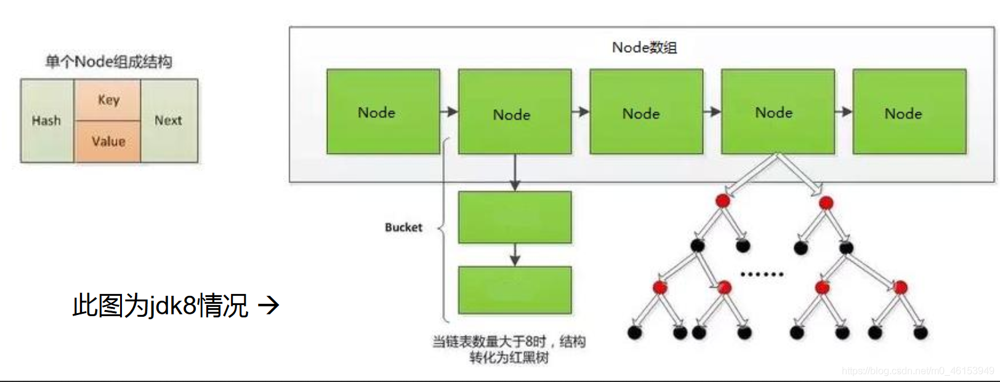

集合
集合
- 概念：对象的容器，定义了对对象常用的操作，类似数组功能，都是对多个数据进行存储操作的结构，简称Java容器
说明：此时的存储，主要指的是内存层面的存储，不涉及到持久化的存储(数据库，.txt, .jpg)
集合和数组
- 数组长度固定，集合长度不固定
- 数组可以存储基本类型和引用类型且一旦定义好之后类型不可变，集合只能存储引用类型
- 数组中提供的方法非常有限，对于增删改等操作非常不便，同时效率不高
- 获取数组中实际元素的个数的需求，数组没有现成的属性或者方法可用
- 数组存储数据的特点：有序，可重复。对于无序、不可重复的需求，不能满足。
位置：java.util.*
一. Java集合框架概述
Java 集合可分为Collection和Map两种体系
Collection接口：单列数据，用来存储一个一个的对象，定义了存取一组对象的方法的集合List：元素有序、可重复的集合（有下标）”动态数组”- 实现类：ArrayList, LinkedList, Vector
Set：元素无序、不可重复的集合（无下标）”数学里的集合”- 实现类：HashSet, LinkedHashSet, TreeSet
Map接口：双列数据，用来存储一对一对的数据，保存具有映射关系“key-value对”的集合 “函数 y = f(x) x是key, y是value”- 实现类：HashMap, LinkedHashMap, TreeMap, HashTable, Properties
Collection接口继承树

Map接口继承树

二. Collection接口中的方法的使用
2.1 add(c) size() addAll(c) clear() isAmpty()
1 | public class CollectionTest{ |
2.2 contains() containsAll(c) remove(o) removeAll(c) retainAll(c) equals(o) hashCode() toArray() iterator()
向Collection接口的实现类的对象中添加数据obj时，要求obj所在类要重写equals().
1 | public class CollectinoTest { |
三. 迭代器接口Iterator（只针对于Collection，不包括Map）
- Iterator对象称为迭代器(设计模式的一种)，主要用于遍历Collection 集合中的元素。
- GOF给迭代器模式的定义为：提供一种方法访问一个容器(container)对象中各个元素，而又不需暴露该对象的内部细节。迭代器模式，就是为容器而生。类似于“公交车上的售票员”、“火车上的乘务员”、“空姐”。
- Collection接口继承了java.lang.Iterable接口，该接口有一个iterator()方法，那么所有实现了Collection接口的集合类都有一个iterator()方法，用以返回一个实现了Iterator接口的对象。
- Iterator 仅用于遍历集合，Iterator本身并不提供承装对象的能力。如果需要创建Iterator 对象，则必须有一个被迭代的集合。
- 集合对象每次调用iterator()方法都得到一个全新的迭代器对象，默认游标都在集合的第一个元素之前。
3.1 next() hasNext()
next(): 指针下移，将下移以后集合位置上的元素返回
hasNext(): 判断是否还有下一个元素（没有下移）
1 | public class IteratorTest { |
两种常见错误写法
1 | //错误方式一：跳着输出，且最后报错 |
3.2 remove()
- 迭代器内部定义了remove(),可以在遍历的时候，删除集合中的元素。此方法不同于集合直接调用remove()
- 如果还未调用next()或在上一次调用next方法之后已经调用了remove方法，再调用remove都会报IllegalStateException
1 | public class IteratorTest { |
3.3 补充：Enumeration(了解就行)
- Enumeration接口是Iterator迭代器的“古老版本”
1 | Enumeration stringEnum = new StringTokenizer("a-b*c-d-e-g", "-"); |
3.4 增强for循环（另一种迭代方式）
- Java 5.0 提供了foreach循环迭代访问Collection和数组。
- 遍历操作不需获取Collection或数组的长度，无需使用索引访问元素。
- 遍历集合的底层还是调用Iterator完成操作。
- for(集合元素的类型 局部变量 : 集合对象)
1 | //对集合 |
四. Collection子接口之一：List接口
鉴于Java中数组用来存储数据的局限性，我们通常使用List替代数组（动态）
List集合类中元素有序、且可重复，集合中的每个元素都有其对应的顺序索引。
List容器中的元素都对应一个整数型的序号记载其在容器中的位置，可以根据序号存取容器中的元素。
JDK API中List接口的实现类常用的有：ArrayList、LinkedList和Vector。
三者的异同
同：三个类都是实现了List接口，存储数据的特点相同：存储有序的、可重复的数据
不同：
ArrayList：作为List接口的主要实现类；线程不安全的，效率高；底层使用Object[] elementData存储
LinkedList：对于频繁的插入、删除操作，使用此类效率比ArrayList高；底层使用双向链表存储
Vector：作为List接口的古老实现类，不常用；线程安全的，效率低；底层使用Object[] elementData存储
4.1 ArrayList源码分析
4.1.1 jdk7的情况下
ArrayList list = new ArrayList();//底层创建了长度是10的Object[]数组elementData
- list.add(123);//elementData[0] = new Integer(123);
- …
- list.add(11);//如果此次的添加导致底层elementData数组容量不够，则扩容。
- 默认情况下，扩容为原来的容量的1.5倍，同时需要将原有数组中的数据复制到新的数组中。
- 结论：建议开发中使用带参的构造器：ArrayList list = new ArrayList(int capacity)
4.1.2 jdk8中ArrayList的变化
ArrayList list = new ArrayList();//底层Object[] elementData初始化为{}.并没有创建长度为10的数组
- list.add(123);//第一次调用add()时，底层才创建了长度10的数组，并将数据123添加到elementData[0]
- …
- 后续的添加和扩容操作与jdk 7 无异
4.1.3 小结
- jdk7中的ArrayList的对象的创建类似于单例的饿汉式，而jdk8中的ArrayList的对象的创建类似于单例的懒汉式，延迟了数组的创建，节省内存。
4.2 LinkedList的源码分析
- 对于频繁的插入或删除元素的操作，建议使用LinkedList类，效率较高
- LinkedList：双向链表，内部没有声明数组，而是定义了Node类型的first和last，用于记录首末元素。同时，定义内部类Node，作为LinkedList中保存数据的基本结构。

LinkedList list = new LinkedList(); 内部声明了Node类型的first和last属性，默认值为null
list.add(123);//将123封装到Node中，创建了Node对象。
其中，Node定义为：体现了LinkedList的双向链表的说法
1
2
3
4
5
6
7
8
9
10
11private static class Node<E> {
E item;
Node<E> next;
Node<E> prev;
Node(Node<E> prev, E element, Node<E> next) {
this.item = element;
this.next = next; //next变量记录下一个元素的位置
this.prev = prev; //prev变量记录前一个元素的位置
}
}
4.3 Vector源码分析
- Vector 是一个古老的集合，JDK1.0就有了。大多数操作与ArrayList相同，区别之处在于Vector是线程安全的。
- 在各种list中，最好把ArrayList作为缺省选择。当插入、删除频繁时，使用LinkedList；Vector总是比ArrayList慢，所以尽量避免使用。
- 在扩容方面，默认扩容为原来的数组长度的2倍。jdk7和jdk8中通过Vector()构造器创建对象时，底层都创建了长度为10的数组。
4.4 List接口中的常用方法
4.4.1 方法
List除了从Collection集合继承的方法外，List 集合里添加了一些根据索引来操作集合元素的方法。
- void add(intindex, Object ele):在index位置插入ele元素
- boolean addAll(int index, Collection eles):从index位置开始将eles中的所有元素添加进来
- Object get(int index):获取指定index位置的元素
- int indexOf(Object obj):返回obj在集合中首次出现的位置
- int lastIndexOf(Object obj):返回obj在当前集合中末次出现的位置
- Object remove(int index):移除指定index位置的元素，并返回此元素
- Object set(int index, Object ele):设置指定index位置的元素为ele
- List subList(int fromIndex, int toIndex):返回从fromIndex到toIndex位置的左闭右开区间的子集合
1 | public class ListTest { |
4.4.2 遍历
1 | /* |
4.5 易错点
区分List中remove(int index)和remove(Object obj)
1 | public class ListEver { |
五. Collection子接口之二：Set接口
Set接口的框架结构
- Collection接口：单列集合，用来存储一个一个的对象
- |——Set接口：存储无序的、不可重复的数据 —>高中讲的“集合”
- |——HashSet：作为Set接口的主要实现类；线程不安全的；可以存储null值
- |——LinkedHashSet：作为HashSet的子类；遍历其内部数据时，可以按照添加的顺序遍历。对于频繁的遍历操作，LinkedHashSet效率高于HashSet.
- |——TreeSet：底层是红黑树。可以按照添加对象的指定属性，进行排序。
- |——HashSet：作为Set接口的主要实现类；线程不安全的；可以存储null值
- |——Set接口：存储无序的、不可重复的数据 —>高中讲的“集合”
注意点
Set接口中没有定义额外的方法，使用的都是Collection中声明过的方法。
无序性：不等于随机性。存储的数据在底层数组中并非按照数组索引的顺序添加，而是根据数据的哈希值决定的。（遍历输出的顺序一直一样）
- 不可重复性：保证添加的元素按照equals()判断时，不能返回true.即：相同的元素只能添加一个
- 要求向Set(主要指：HashSet、LinkedHashSet)中添加的数据，其所在的类一定要重写hashCode() 和 equals()
- 要求：重写的hashCode()和equals()尽可能保持一致性（相等的对象必须具有相等的散列码）
- 重写两个方法的小技巧：对象中用作 equals() 方法比较的 Field，都应该用来计算 hashCode 值。
5.1 HashSet
添加元素的过程
我们向HashSet中添加元素a,首先调用元素a所在类的hashCode()方法，计算元素a的哈希值
此哈希值接着通过某种算法（散列表）计算出在HashSet底层数组中的存放位置（即为：索引位置），判断数组此位置上是否已经有元素：
情况1：如果此位置上没有其他元素，则元素a添加成功。
情况2：如果此位置上有其他元素b(或以链表形式存在的多个元素），则比较元素a与元素b的hash值：
情况2.1：如果hash值不相同，则元素a添加成功。
情况2.2：如果hash值相同，进而需要调用元素a所在类的equals()方法：
equals()返回true,元素a添加失败（里面已经有了相同的元素）
equals()返回false,则元素a添加成功。
对于后两种添加成功的情况而言：元素a 与已经存在指定索引位置上数据以链表的方式存储。
jdk 7 :元素a放到数组中，指向原来的元素。
jdk 8 :原来的元素在数组中，指向元素a
总结：七上八下
HashSet底层：数组+链表的结构。

5.2 关于hashCode()和equals()的重写
1. 重写hashCode() 方法的基本原则
- 在程序运行时，同一个对象多次调用hashCode()方法应该返回相同的值。
- 当两个对象的equals()方法比较返回true时，这两个对象的hashCode()方法的返回值也应相等。
- 对象中用作equals() 方法比较的Field，都应该用来计算hashCode值。
2. 重写equals() 方法的基本原则
- 当一个类有自己特有的“逻辑相等”概念, 当改写equals()的时候，总是要改写hashCode()，根据一个类的equals方法（改写后），两个截然不同的实例有可能在逻辑上是相等的，但是，根据Object.hashCode()方法，它们仅仅是两个对象。
- 因此，违反了“相等的对象必须具有相等的散列码”。
- 结论：复写equals方法的时候一般都需要同时复写hashCode方法。通常参与计算hashCode的对象的属性也应该参与到equals()中进行计算。
3.Eclipse/IDEA工具里hashCode()的重写
以Eclipse/IDEA为例，在自定义类中可以调用工具自动重写equals和hashCode。问题：为什么用Eclipse/IDEA复写hashCode方法，有31这个数字？
- 选择系数的时候要选择尽量大的系数。因为如果计算出来的hash地址越大，所谓的“冲突”就越少，查找起来效率也会提高。（减少冲突）
- 并且31只占用5bits,相乘造成数据溢出的概率较小。
- 31可以由i*31== (i<<5)-1来表示,现在很多虚拟机里面都有做相关优化。（提高算法效率）
- 31是一个素数，素数作用就是如果我用一个数字来乘以这个素数，那么最终出来的结果只能被素数本身和被乘数还有1来整除！(减少冲突)
5.3 LinkedHashSet
LinkedHashSet作为HashSet的子类，在添加数据的同时，每个数据还维护了两个引用，记录此数据前一个数据和后一个数据。
优点：对于频繁的遍历操作，LinkedHashSet效率高于HashSet
LinkedHashSet根据元素的hashCode值来决定元素的存储位置，但它同时使用双向链表维护元素的次序，这使得元素看起来是以插入顺序保存的。
LinkedHashSet插入性能略低于HashSet，但在迭代访问Set 里的全部元素时有很好的性能。
LinkedHashSet不允许集合元素重复。

5.4 TreeSet
- 注意点
1.向TreeSet中添加的数据，要求是相同类的对象。(可排序)
2.两种排序方式：自然排序（实现Comparable接口重写compareTo()）和 定制排序（Comparator）。默认情况下，TreeSet采用自然排序。
3.自然排序中，比较两个对象是否相同的标准为：compareTo()返回0.不再是equals().
4.定制排序中，比较两个对象是否相同的标准为：compare()返回0.不再是equals().
- TreeSet是SortedSet接口的实现类，TreeSet可以确保集合元素处于排序状态。
- TreeSet底层使用红黑树结构存储数据。特点：有序，查询速度比List快
六. Map接口

6.1 多个实现类的对比
- Map:双列数据，存储key-value对的数据 —-类似于高中的函数：y = f(x)
- HashMap:作为Map的主要实现类；线程不安全的，效率高；存储null的key和value
- LinkedHashMap:保证在遍历map元素时，可以按照添加的顺序实现遍历。原因：在原有的HashMap底层结构基础上，添加了一对指针，指向前一个和后一个元素。对于频繁的遍历操作，此类执行效率高于HashMap。
- TreeMap:保证按照添加的key-value对进行排序，实现排序遍历。此时考虑key的自然排序或定制排序。底层使用红黑树
- Hashtable:作为古老的实现类；线程安全的，效率低；不能存储null的key和value
- Properties:常用来处理配置文件。key和value都是String类型
- HashMap:作为Map的主要实现类；线程不安全的，效率高；存储null的key和value
HashMap的底层：数组+链表 （jdk7及之前） 数组+链表+红黑树 （jdk 8）
面试题：
1.HashMap的底层实现原理？
2.HashMap 和 Hashtable的异同？
3.ConcurrentHashMap 与 Hashtable的异同？
6.2 Map的key-value结构理解
key和value都可以是任何引用类型的数据
Map中的key：无序的、不可重复的，使用Set存储所有的key —-> key所在的类要重写equals()和hashCode() （以HashMap为例）
- Map中的value：无序的、可重复的，使用Collection存储所有的value —->value所在的类要重写equals()
- 一个键值对：key-value构成了一个Entry对象。
- Map中的entry：无序的、不可重复的，使用Set存储所有的entry

6.3 HashMap
- HashMap是Map接口使用频率最高的实现类。
- 允许使用null键和null值，与HashSet一样，不保证映射的顺序。
- HashMap判断两个key相等的标准是：两个key通过equals()方法返回true，hashCode值也相等。
- HashMap判断两个value相等的标准是：两个value通过equals()方法返回true。
6.3.1 HashMap的底层实现原理
6.3.1.1 以jdk7为例说明
1 | HashMap map = new HashMap();//在实例化以后，底层创建了长度是16的一维数组Entry[] table。 |
6.3.1.2 jdk8相较于jdk7在底层方面的不同
new HashMap():底层没有创建一个长度为16的数组
jdk 8底层的数组是：Node[],而非Entry[]
首次调用put()方法时，底层创建长度为16的数组
jdk7底层结构只有：数组+链表。jdk8中底层结构：数组+链表+红黑树。
4.1 形成链表时，七上八下（jdk7:新的元素指向旧的元素。jdk8：旧的元素指向新的元素）
4.2当数组的某一个索引位置上的元素以链表形式存在的数据个数 > 8 且当前数组的长度 > 64时，此时此索引位置上的所数据改为使用红黑树存储。（查找效率高）

6.3.2 HashMap源码中的重要常量
- DEFAULT_INITIAL_CAPACITY : HashMap的默认容量，16
MAXIMUM_CAPACITY：HashMap的最大支持容量， 2^30
- DEFAULT_LOAD_FACTOR：HashMap的默认加载因子：0.75 （如自己设不能小于0）
- TREEIFY_THRESHOLD：Bucket中链表长度大于该默认值，转化为红黑树:8
- UNTREEIFY_THRESHOLD：Bucket中红黑树存储的Node小于该默认值，转化为链表
- MIN_TREEIFY_CAPACITY：桶中的Node被树化时最小的hash表容量:64 （桶中的Node的数量大到需要变红黑树时，若hash表容量小于MIN_TREEIFY_CAPACITY时，此时应执行resize扩容操作，这个MIN_TREEIFY_CAPACITY的值至少是TREEIFY_THRESHOLD的4倍）
- table：存储元素的数组，总是2的n次幂
- entrySet：存储具体元素的集
- size：HashMap中存储的键值对的数量
- modCount：HashMap扩容和结构改变的次数
- threshold：扩容的临界值，=容量填充因子：16 0.75 => 12
- loadFactor：填充因子 越大，数组的利用率越高，但是链表越长 越小，链表越短，但是利用率低
6.4 LinkedHashMap
LinkedHashMap是HashMap的子类
在HashMap存储结构的基础上，使用了一对双向链表来记录添加元素的顺序
与LinkedHashSet类似，LinkedHashMap可以维护Map的迭代顺序，顺序与key-value对的插入顺序一致
主要变化在于LinkedHashMap的Entry内部类，对应HashMap的Node内部类
1
2
3
4
5
6
7
8
9
10
11
12
13
14//Hashmap中的内部类：Node
static class Node<K,V> implements Map.Entry<K,V>{
final int hash;
final K key;
V value;
Node<K,V> next;
}
//LinkedHashMap中的内部类：Entry
static class Entry<K,V> extands HashMap.Node<K,V>{
Entry<K,V> before, after;//能够记录添加元素的先后顺序
Entry(int hash, K key, V value, Node<K,V> next){
super(hash, key, value, next);
}
}
6.5 Map中的常用方法
添加、删除、修改操作：
- Object put(Object key,Object value)：将指定key-value添加到(或修改)当前map对象中
- void putAll(Map m):将m中的所有key-value对存放到当前map中
- Object remove(Object key)：移除指定key的key-value对，并返回value
- void clear()：清空当前map中的所有数据
元素查询的操作：
- Object get(Object key)：获取指定key对应的value
- boolean containsKey(Object key)：是否包含指定的key
- boolean containsValue(Object value)：是否包含指定的value
- int size()：返回map中key-value对的个数
- boolean isEmpty()：判断当前map是否为空
- boolean equals(Object obj)：判断当前map和参数对象obj是否相等
元视图操作的方法：
Set keySet()：返回所有key构成的Set集合
Collection values()：返回所有value构成的Collection集合
Set entrySet()：返回所有key-value对构成的Set集合
1
2
3
4
5
6
7
8
9
10
11
12
13
14
15
16
17
18
19
20
21
22
23
24
25
26
27
28
29
30
31
32
33
34
35
36
37
38
39
40public void test5(){
Map map = new HashMap();
map.put("AA",123);
map.put(45,1234);
map.put("BB",56);
//遍历所有的key集：keySet()
Set set = map.keySet();
Iterator iterator = set.iterator();
while(iterator.hasNext()){
System.out.println(iterator.next());
}
//遍历所有的values集：values()
Collection values = map.values();
for(Object obj : values){
System.out.println(obj);
}
//遍历所有的key-values
//方式一：
Set entrySet = map.entrySet();
Iterator iterator1 = entrySet.iterator();
while (iterator1.hasNext()){
Object obj = iterator1.next();
//entrySet集合中的元素都是entry
Map.Entry entry = (Map.Entry) obj;
System.out.println(entry.getKey() + "---->" + entry.getValue());
}
//方式二：
Set keySet = map.keySet();
Iterator iterator2 = keySet.iterator();
while(iterator2.hasNext()){
Object key = iterator2.next();
Object value = map.get(key);
System.out.println(key + "=====" + value);
}
}
总结：
添加：put(Object key,Object value)
- 删除：remove(Object key)
- 修改：put(Object key,Object value)
- 查询：get(Object key)
- 长度：size()
- 遍历：keySet() / values() / entrySet()
6.6 TreeMap
- TreeMap存储Key-Value 对时，要求key必须是由同一个类创建的对象，因为需要根据key进行排序。TreeMap可以保证所有的Key-Value 对处于有序状态。
- TreeSet底层使用红黑树结构存储数据
TreeMap的Key的排序：
- 自然排序：TreeMap的所有的Key 必须实现Comparable接口，而且所有的Key应该是同一个类的对象，否则将会抛出ClasssCastException
- 定制排序：创建TreeMap时，传入一个Comparator 对象，该对象负责对TreeMap中的所有key 进行排序。此时不需要Map 的Key实现Comparable 接口
TreeMap判断两个key相等的标准：两个key通过compareTo()方法或者compare()方法返回0。
6.7 Hashtable
- 小细节：t不大写，应该是hashtable是一个词
- Hashtable是个古老的Map 实现类，JDK1.0就提供了。不同于HashMap，Hashtable是线程安全的。
- Hashtable实现原理和HashMap相同，功能相同。底层都使用哈希表结构，查询速度快，很多情况下可以互用。
- 与HashMap不同，Hashtable不允许使用null 作为key和value
- 与HashMap一样，Hashtable也不能保证其中Key-Value 对的顺序
- Hashtable判断两个key相等、两个value相等的标准，与HashMap一致。
6.8 Properties处理属性文件
Properties 类是Hashtable的子类，该对象用于处理属性文件
由于属性文件里的key、value都是字符串类型，所以Properties 里的key和value都是字符串类型
存取数据时，建议使用setProperty(String key,Stringvalue)方法和getProperty(String key)方法
1
2
3
4
5
6
7
8
9
10
11
12
13
14
15
16
17
18
19
20
21
22
23
24
25
26public class PropertiesTest {
//Properties:常用来处理配置文件。key和value都是String类型
public static void main(String[] args){
//try-catch-finally快捷键：Ctrl+Alt+T
FileInputStream fis = null;
try {
Properties pros = new Properties();
fis = new FileInputStream("jdbc.properties");
pros.load(fis); //加载流对应文件
String name = pros.getProperty("name");
String password = pros.getProperty("password");
System.out.println("name = " + name + ",password = " + password);
} catch (IOException e) {
e.printStackTrace();
} finally {
if(fis != null){
try {
fis.close();
} catch (IOException e) {
e.printStackTrace();
}
}
}
}
}
七. Collections工具类
可以类比操作数组的工具类：Arrays
Collections 是一个操作Set、List和Map 等集合的工具类（不止操作Collection）
Collections中提供了一系列静态的方法对集合元素进行排序、查询和修改等操作，还提供了对集合对象设置不可变、对集合对象实现同步控制等方法
排序操作：（均为static方法）
- reverse(List)：反转List 中元素的顺序
- shuffle(List)：对List集合元素进行随机排序
- sort(List)：根据元素的自然顺序对指定List 集合元素按升序排序
- sort(List，Comparator)：根据指定的Comparator 产生的顺序对List 集合元素进行排序
- swap(List，int，int)：将指定list 集合中的i处元素和j 处元素进行交换
查找、替换操作：（均为static方法）
Object max(Collection)：根据元素的自然顺序，返回给定集合中的最大元素
Object max(Collection，Comparator)：根据 Comparator 指定的顺序，返回给定集合中的最大元素
Object min(Collection)
Object min(Collection，Comparator)
int frequency(Collection，Object)：返回指定集合中指定元素的出现次数
void copy(List dest,List src)：将src中的内容复制到dest中
1
2
3
4
5
6
7
8
9
10
11
12List list = new ArrayList();
list.add(123);
list.add(43);
list.add(765);
//报异常：IndexOutOfBoundsException("Source does not fit in dest")
//List dest = new ArrayList();//因为dest的长度是0
//Collections.copy(dest,list);
//正确的：
List dest = Arrays.asList(new Object[list.size()]);//[null,null,null]
System.out.println(dest.size());//list.size();
Collections.copy(dest,list);
System.out.println(dest);
- boolean replaceAll(List list，Object oldVal，Object newVal)：使用新值替换 List 对象的所有旧值
Collections 类中提供了多个 synchronizedXxx() 方法，该方法可使将指定集合包装成线程同步的集合，从而可以解决多线程并发访问集合时的线程安全问题
1
2//返回的list1即为线程安全的List
List list1 = Collections.synchronizedList(list);Collection 和 Collections的区别？
- Collection是集合类的上级接口，继承于他的接口主要有Set 和List
- Collections是针对集合类的一个帮助类，他提供一系列静态方法实现对各种集合的搜索、排序、线程安全化等操作